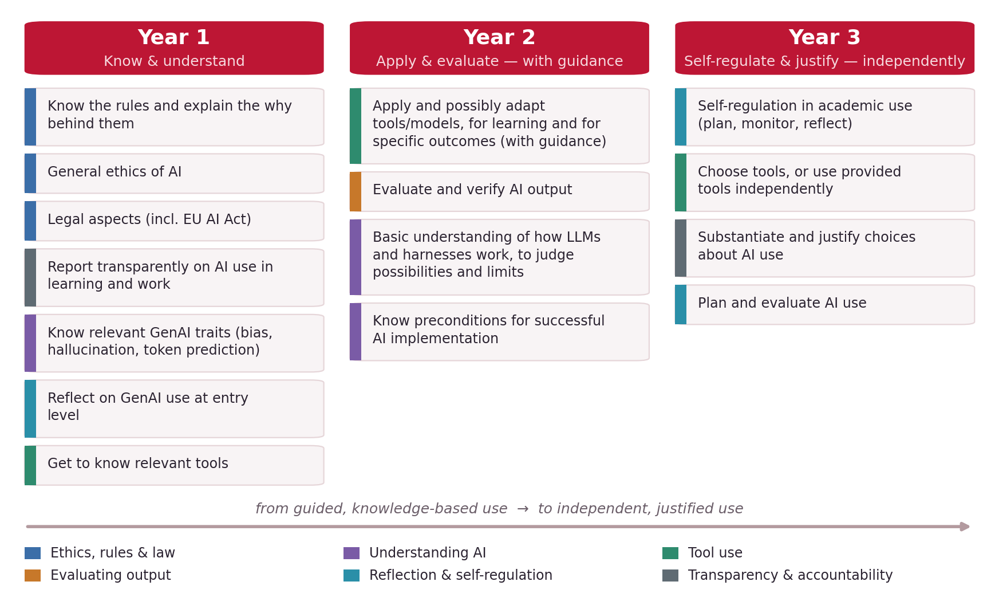
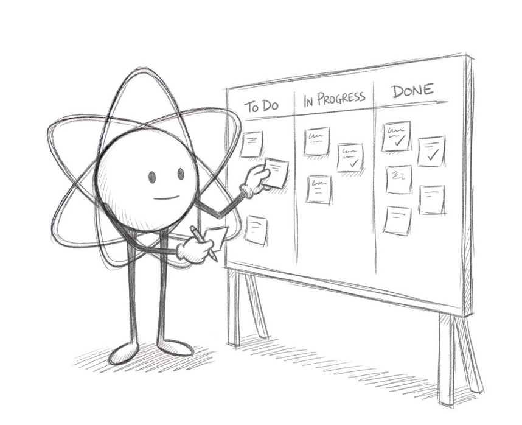

<!DOCTYPE html>
<html lang="en">
<head>
    <meta charset="utf-8" />
    <meta name="viewport" content="width=device-width, initial-scale=1.0, maximum-scale=1.0, user-scalable=no" />

    <title></title>
    <link rel="stylesheet" href="../_shared/1cc66e6465f6/dist/reset.css">
    <link rel="stylesheet" href="../_shared/1cc66e6465f6/dist/reveal.css" />
    <link rel="stylesheet" href="css/slides-extended.css" />
    <link rel="stylesheet" href="../_shared/1cc66e6465f6/dist/theme/white.css" id="theme" />
    <link rel="stylesheet" href="../_shared/1cc66e6465f6/plugin/highlight/zenburn.css" />
    <link rel="stylesheet" href="../_shared/1cc66e6465f6/plugin/customcontrols/style.css">


    <link rel="stylesheet" href="css/vlt-template.css" />

    <script defer src="../_shared/1cc66e6465f6/dist/fontawesome/all.min.js"></script>

    <script type="text/javascript">
        function pageInIframe() {
            return (window.location !== window.parent.location);
        }

        let forgetPop = true;
        function onPopState(event) {
            if(forgetPop){
                forgetPop = false;
            } else if( pageInIframe()) {
                parent.postMessage(event.target.location.href, "app://obsidian.md");
            }
        }
        window.onpopstate = onPopState;
        window.onmessage = event => {
            if(event.data == "reload"){
                window.document.location.reload();
            }
            forgetPop = true;
        }

        function fitElements() {
            const itemsToFit = document.getElementsByClassName('fitText');
            for (const item in itemsToFit) {
                if (Object.hasOwnProperty.call(itemsToFit, item)) {
                    const element = itemsToFit[item];
                    fitElement(element, 1, 1000);
                    element.classList.remove('fitText');
                }
            }
        }

        function fitElement(element, start, end) {

            let size = (end + start) / 2;
            element.style.fontSize = `${size}px`;

            if (Math.abs(start - end) < 1) {
                while (element.scrollHeight > element.offsetHeight) {
                    size--;
                    element.style.fontSize = `${size}px`;
                }
                return;
            }

            if (element.scrollHeight > element.offsetHeight) {
                fitElement(element, start, size);
            } else {
                fitElement(element, size, end);
            }
        }

        document.onreadystatechange = () => {
            fitElements();
            if (document.readyState === 'complete') {
                if (pageInIframe() && window.location.href.indexOf("?export") != -1){
                    parent.postMessage(event.target.location.href, "app://obsidian.md");
                }
                if (window.location.href.indexOf("print-pdf") != -1){
                    let stateCheck = setInterval(() => {
                        clearInterval(stateCheck);
                        window.print();
                    }, 250);
                }
            }
        };
    </script>
</head>

<body>
    <div class="reveal">
        <div class="slides"><section data-separator="
?
---
?
" data-separator-vertical="
?
--
?
" data-separator-notes="note:" data-markdown><script type="text/template"><!-- .slide: class="title-slide drop" data-state="vlt-title" template="" -->
<div class="" style="position: absolute; left: 0px; top: 0px; height: 700px; width: 960px; min-height: 700px; display: flex; flex-direction: column; align-items: start; justify-content: center" absolute="true">

# From LTOs to course learning objectives
### Economics and Business Economics


<style>
/* EBE deck: top-align content slides so headings sit at the same height on every slide */
.reveal .slides section:not(.title-slide) > div[absolute="true"] { justify-content: flex-start !important; padding-top: 72px; box-sizing: border-box; }
</style>

<p class="vlt-title-meta"><span class="vlt-name">Roger Pruppers & Vincent Tijms</span><br><span class="vlt-date">19 november 2026</span></p>

<aside class="notes"><p>Programme-specific follow-up session in the VLT AI track. Goal: move from the three college-wide LTOs to concrete, assessable course learning objectives in EBE courses.</p>
</div></aside></script></section><section data-separator="
?
---
?
" data-separator-vertical="
?
--
?
" data-separator-notes="note:" data-markdown><script type="text/template"><!-- .slide: class="drop" template="" -->
<div class="" style="position: absolute; left: 0px; top: 0px; height: 700px; width: 960px; min-height: 700px; display: flex; flex-direction: column; align-items: start; justify-content: center" absolute="true">

## Purpose of this session

- Translate the college's AI learning trajectory objectives (LTOs) into **course learning objectives** for EBE courses
- Check that each objective is **aligned** with an LTO and fits the **year level** of the course
- Leave with a first draft per course: objective, LTO, year
- *Maybe* some ideas for assessment, too

<aside class="notes"><p>The LTOs are deliberately broad and programme-overarching. Today we make them concrete for this programme, course by course.</p>
</div></aside></script></section><section data-separator="
?
---
?
" data-separator-vertical="
?
--
?
" data-separator-notes="note:" data-markdown><script type="text/template"><!-- .slide: class="drop" template="" -->
<div class="" style="position: absolute; left: 0px; top: 0px; height: 700px; width: 960px; min-height: 700px; display: flex; flex-direction: column; align-items: start; justify-content: center" absolute="true">

## The three AI LTOs of the College Economics and Business

<div style="display:flex; gap:24px; align-items:stretch; margin-top:20px;">
<div style="flex:1; margin-top:0px; border-top:6px solid #e8a0b0; padding:14px 18px; background:#f7f7f7;">
<div style="display:flex; justify-content:space-between; align-items:center;"><span style="font-size:0.6em; letter-spacing:0.08em; color:#bc0031; font-weight:700; white-space:nowrap;">LTO 1</span><span class="vlt-bloom l1" style="font-size:0.42em;">Bloom · Understand</span></div>
<div style="font-size:0.68em; margin-top:10px; line-height:1.35;">Explain the basics of AI and relate them to the fields of economics, business and econometrics</div>
</div>
<div style="flex:1; margin-top:0px; border-top:6px solid #d4506c; padding:14px 18px; background:#f7f7f7;">
<div style="display:flex; justify-content:space-between; align-items:center;"><span style="font-size:0.6em; letter-spacing:0.08em; color:#bc0031; font-weight:700; white-space:nowrap;">LTO 2</span><span class="vlt-bloom l2" style="font-size:0.42em;">Bloom · Apply</span></div>
<div style="font-size:0.68em; margin-top:10px; line-height:1.35;">Select and refine digital tools (including AI) for research and theory</div>
</div>
<div style="flex:1; margin-top:0px; border-top:6px solid #bc0031; padding:14px 18px; background:#f7f7f7;">
<div style="display:flex; justify-content:space-between; align-items:center;"><span style="font-size:0.6em; letter-spacing:0.08em; color:#bc0031; font-weight:700; white-space:nowrap;">LTO 3</span><span class="vlt-bloom l3" style="font-size:0.42em;">Bloom · Evaluate</span></div>
<div style="font-size:0.68em; margin-top:10px; line-height:1.35;">Use AI responsibly in research and practice</div>
</div>
</div>


<p style="font-size:0.6em; color:#6b6b6b; margin-top:24px;">While working with these LTOs, we may find they need refinement. They should remain harmonised across the CEB bachelor programmes, however.</p>

<aside class="notes"><p>LTOs are not a separate AI course or line: they are addressed in an integrated way within existing courses.</p>
</div></aside></script></section><section data-separator="
?
---
?
" data-separator-vertical="
?
--
?
" data-separator-notes="note:" data-markdown><script type="text/template"><!-- .slide: class="drop" template="" -->
<div class="" style="position: absolute; left: 0px; top: 0px; height: 700px; width: 960px; min-height: 700px; display: flex; flex-direction: column; align-items: start; justify-content: center" absolute="true">

## Scaffolding the learning




<aside class="notes"><p>Brainstorm output of 30 September, no consensus sought yet. Year 1: know and understand. Year 2: apply and evaluate with guidance. Year 3: self-regulate and justify independently.</p>
</div></aside></script></section><section data-separator="
?
---
?
" data-separator-vertical="
?
--
?
" data-separator-notes="note:" data-markdown><script type="text/template"><!-- .slide: class="drop" template="" -->
<div class="" style="position: absolute; left: 0px; top: 0px; height: 700px; width: 960px; min-height: 700px; display: flex; flex-direction: column; align-items: start; justify-content: center" absolute="true">

## EBE courses that should contribute to AI LTOs

<table class="vlt-table">
<thead><tr><th style="width:110px;">Year</th><th>Course</th><th style="width:190px;">Code</th></tr></thead>
<tbody>
<tr class="y1 ygroup"><td rowspan="3" class="vlt-year">Year 1</td><td>Principles of Economics and Business 1</td><td class="vlt-code">6011P0200Y</td></tr>
<tr class="y1"><td>Principles of Economics and Business 2</td><td class="vlt-code">6011P0212Y</td></tr>
<tr class="y1"><td>Research Project</td><td class="vlt-code">6011P0254Y</td></tr>
<tr class="y2 ygroup"><td rowspan="2" class="vlt-year">Year 2</td><td>Research Laboratory: Economics<span class="vlt-sub">Economics track</span></td><td class="vlt-code">6012B0464Y</td></tr>
<tr class="y2"><td>Research Laboratory: Business Economics<span class="vlt-sub">Business Economics tracks</span></td><td class="vlt-code">6012B0459Y</td></tr>
<tr class="y3 ygroup"><td rowspan="2" class="vlt-year">Year 3</td><td>AI for Research</td><td class="vlt-code"><em>not in catalogue</em></td></tr>
<tr class="y3"><td>Sustainability Reporting and Assurance<span class="vlt-sub">Accounting &amp; Control specialisation</span></td><td class="vlt-code">6013B0559Y</td></tr>
</tbody>
</table>

<aside class="notes"><p>Questions for the group: is this list complete and correct? Which year-1 course carries the foundation (rules, ethics, law, transparency)? Coverage is currently one or two courses per year.</p>
</div></aside></script></section><section ><section data-separator="
?
---
?
" data-separator-vertical="
?
--
?
" data-separator-notes="note:" data-markdown><script type="text/template"><!-- .slide: class="drop" template="" -->
<div class="" style="position: absolute; left: 0px; top: 0px; height: 700px; width: 960px; min-height: 700px; display: flex; flex-direction: column; align-items: start; justify-content: center" absolute="true">

## From LTO to course learning objectives

<div class="vlt-two-col">
<div class="vlt-col-main">

1. **Pair up to work on your course**, using colour-coded post-its for the year level
2. **Pick appropriate element(s)** of each LTO that fits your course
3. **Write the objectives** (ILOs) — one observable verb per objective
4. **Place your ILO on the sheet** - add your course name

<p class="vlt-footnote">If your ILO contributes to multiple LTOs, mark it with a black dot and put it on both sheets.</p>

</div>
<div class="vlt-lto-panel">
<div class="vlt-lto-panel-head">The three LTOs</div>
<div class="vlt-lto-mini l1"><div class="vlt-lto-mini-top"><b>LTO 1</b><span class="vlt-bloom l1">Understand</span></div>Explain the basics of AI and relate them to the fields of economics, business and econometrics</div>
<div class="vlt-lto-mini l2"><div class="vlt-lto-mini-top"><b>LTO 2</b><span class="vlt-bloom l2">Apply</span></div>Select and refine digital tools (including AI) for research and theory</div>
<div class="vlt-lto-mini l3"><div class="vlt-lto-mini-top"><b>LTO 3</b><span class="vlt-bloom l3">Evaluate</span></div>Use AI responsibly in research and practice</div>
</div>
</div>

<aside class="notes"><p>Step 3 and 4 are where most of the work is. Step 5 is done across courses, preferably with coordinators of courses with similar roles in the curriculum.</p>
</div></aside></script></section><section data-separator="
?
---
?
" data-separator-vertical="
?
--
?
" data-separator-notes="note:" data-markdown><script type="text/template"><!-- .slide: class="drop" template="" -->
<div class="" style="position: absolute; left: 0px; top: 0px; height: 700px; width: 960px; min-height: 700px; display: flex; flex-direction: column; align-items: start; justify-content: center" absolute="true">

## Writing the objective: one verb

- Start with *"The student …"* followed by **one** observable verb
- Split an objective that needs two verbs into two objectives
- Match the verb to what you could reasonably assess in the year of your course

<div style="display:flex; gap:20px; margin-top:20px; font-size:0.75em;">
<div style="flex:1; border-left:5px solid #bc0031; padding-left:12px;"><b>Year 1</b><br>explains · describes · identifies · reports</div>
<div style="flex:1; border-left:5px solid #bc0031; padding-left:12px;"><b>Year 2</b><br>applies · verifies · evaluates · adapts</div>
<div style="flex:1; border-left:5px solid #bc0031; padding-left:12px;"><b>Year 3</b><br>selects · plans · justifies · reflects</div>
</div>

<aside class="notes"></div></aside></script></section><section data-separator="
?
---
?
" data-separator-vertical="
?
--
?
" data-separator-notes="note:" data-markdown><script type="text/template"><!-- .slide: class="drop" template="" -->
<div class="" style="position: absolute; left: 0px; top: 0px; height: 700px; width: 960px; min-height: 700px; display: flex; flex-direction: column; align-items: start; justify-content: center" absolute="true">

## Illustrations for EBE

<table class="vlt-table vlt-table-compact">
<thead><tr><th style="width:90px;">Year</th><th style="width:250px;">Course</th><th style="width:120px;">LTO</th><th>Course learning objective</th></tr></thead>
<tbody>
<tr class="y1 ygroup"><td rowspan="3" class="vlt-year">Year 1</td><td class="vlt-course">Principles of Economics and Business 1</td><td><span class="vlt-bloom l1">LTO 1 · Understand</span></td><td>The student <b>explains</b> how generative AI produces text, including why it can produce errors.</td></tr>
<tr class="y1"><td class="vlt-course">Principles of Economics and Business 2</td><td><span class="vlt-bloom l3">LTO 3 · Evaluate</span></td><td>The student <b>explains</b> the faculty’s rules on GenAI use and the reasons behind them.</td></tr>
<tr class="y1"><td class="vlt-course">Research Project</td><td><span class="vlt-bloom l3">LTO 3 · Evaluate</span></td><td>The student <b>reports</b> their own use of AI transparently in the research report.</td></tr>
<tr class="y2 ygroup"><td rowspan="2" class="vlt-year">Year 2</td><td class="vlt-course">Research Laboratory: Economics</td><td><span class="vlt-bloom l2">LTO 2 · Apply</span></td><td>The student <b>applies</b> an AI coding assistant, under guidance, in the empirical analysis.</td></tr>
<tr class="y2"><td class="vlt-course">Research Laboratory: Business Economics</td><td><span class="vlt-bloom l3">LTO 3 · Evaluate</span></td><td>The student <b>verifies</b> AI-generated output against primary sources.</td></tr>
<tr class="y3 ygroup"><td rowspan="2" class="vlt-year">Year 3</td><td class="vlt-course">AI for Research</td><td><span class="vlt-bloom l2">LTO 2 · Apply</span></td><td>The student <b>selects</b> an AI tool that fits the research question.</td></tr>
<tr class="y3"><td class="vlt-course">Sustainability Reporting and Assurance</td><td><span class="vlt-bloom l1">LTO 1 · Understand</span></td><td>The student <b>relates</b> the capabilities and limitations of AI to sustainability reporting and assurance.</td></tr>
</tbody>
</table>

<p class="vlt-footnote">Illustrations only — to be rewritten by the course coordinators.</p>

<aside class="notes"><p>One example per course listed on the previous course slide, each with the LTO it contributes to. Verbs follow the year level (year 1: explains, reports; year 2: applies, verifies; year 3: selects, relates).</p>
</div></aside></script></section></section><section data-separator="
?
---
?
" data-separator-vertical="
?
--
?
" data-separator-notes="note:" data-markdown><script type="text/template"><!-- .slide: class="drop" template="" -->
<div class="" style="position: absolute; left: 0px; top: 0px; height: 700px; width: 960px; min-height: 700px; display: flex; flex-direction: column; align-items: start; justify-content: center" absolute="true">

## Let's review what we have

<div class="vlt-review-grid">
<div class="vlt-review-card"><div class="vlt-review-head"><span class="vlt-review-num">1</span>Scaffolding</div><div class="vlt-review-q">Is there a good build-up over the years for each LTO?</div></div>
<div class="vlt-review-card"><div class="vlt-review-head"><span class="vlt-review-num">2</span>Scope</div><div class="vlt-review-q">Do the LTOs work well? Should they be formulated more or less narrowly? Should any be split or merged?</div></div>
<div class="vlt-review-card"><div class="vlt-review-head"><span class="vlt-review-num">3</span>ILOs</div><div class="vlt-review-q">Are there ILOs that cannot be placed under any of the LTOs? Or that fit with multiple LTOs?</div></div>
<div class="vlt-review-card"><div class="vlt-review-head"><span class="vlt-review-num">4</span>Placement of the LTOs</div><div class="vlt-review-q">Should these form their own learning trajectory? Or do the LTOs have a place in pre-existing learning trajectories?</div></div>
</div>
</div></script></section><section data-separator="
?
---
?
" data-separator-vertical="
?
--
?
" data-separator-notes="note:" data-markdown><script type="text/template"><!-- .slide: class="drop" template="" -->
<div class="" style="position: absolute; left: 0px; top: 0px; height: 700px; width: 960px; min-height: 700px; display: flex; flex-direction: column; align-items: start; justify-content: center" absolute="true">

## Follow-up steps

<div class="vlt-two-col" style="align-items:center;">
<div class="vlt-review-grid vlt-review-stack">
<div class="vlt-review-card"><div class="vlt-review-head"><span class="vlt-review-num">1</span>Per course</div><div class="vlt-review-q">For each course, write down the steps that still need to be taken — one post-it per step.</div></div>
<div class="vlt-review-card"><div class="vlt-review-head"><span class="vlt-review-num">2</span>For the programme</div><div class="vlt-review-q">For the programme as a whole, write down steps or key decisions that still need to be taken.</div></div>
<div class="vlt-review-card"><div class="vlt-review-head"><span class="vlt-review-num">3</span>On the Kanban</div><div class="vlt-review-q">Organise the post-its on the Kanban.</div></div>
</div>
<div class="vlt-side-image" style="flex-basis:460px;">




</div>
</div>
</div></script></section><section data-separator="
?
---
?
" data-separator-vertical="
?
--
?
" data-separator-notes="note:" data-markdown><script type="text/template"><!-- .slide: class="drop" template="" -->
<div class="" style="position: absolute; left: 0px; top: 0px; height: 700px; width: 960px; min-height: 700px; display: flex; flex-direction: column; align-items: start; justify-content: center" absolute="true">

## Thank you

- Questions and support: **zichtbareleerlijnen-tlc@uva.nl**
</div></script></section></div>
    </div>

    <script src="../_shared/1cc66e6465f6/dist/reveal.js"></script>
    <script src="../_shared/1cc66e6465f6/plugin/notes/notes.js"></script>
    <script src="../_shared/1cc66e6465f6/plugin/markdown/markdown.js"></script>
    <script src="../_shared/1cc66e6465f6/plugin/obsidian-markdown.js"></script>
    <script src="../_shared/1cc66e6465f6/plugin/highlight/highlight.js"></script>

    <script src="../_shared/1cc66e6465f6/plugin/zoom/zoom.js"></script>
    <script src="../_shared/1cc66e6465f6/plugin/math/math.js"></script>
    <script src="../_shared/1cc66e6465f6/plugin/mermaid/mermaid.js"></script>
    <script src="../_shared/1cc66e6465f6/plugin/chart/chart.umd.js"></script>
    <script src="../_shared/1cc66e6465f6/plugin/chart/plugin.js"></script>
    <script src="../_shared/1cc66e6465f6/plugin/customcontrols/plugin.js"></script>


    <script>
        function extend() {
            const target = {};
            for (let i = 0; i < arguments.length; i++) {
                const source = arguments[i];
                for (const key in source) {
                    if (source.hasOwnProperty(key)) {
                        target[key] = source[key];
                    }
                }
            }
            return target;
        }

        function isLight(color) {
            // normalize to rgb(a)
            const optionEl = document.createElement("option");
            optionEl.style.color = color;
            const normalizedColor = optionEl.style.color;

            const match = normalizedColor.match(/(\d+), (\d+), (\d+)/);
            if (!match) return false;
            const [, c_r, c_g, c_b] = match;

            const brightness = ((c_r * 299) + (c_g * 587) + (c_b * 114)) / 1000;
            return brightness > 155;
        }

        const bgColor = getComputedStyle(document.documentElement).getPropertyValue('--r-background-color').trim();

        if (isLight(bgColor)) {
            document.body.classList.add('has-light-background');
        } else {
            document.body.classList.add('has-dark-background');
        }

        // default options to init reveal.js
        const defaultOptions = {
            controls: true,
            progress: true,
            history: true,
            center: true,
            transition: 'default', // none/fade/slide/convex/concave/zoom
            plugins: [
                ObsidianMarkdown,
                RevealHighlight,
                RevealZoom,
                RevealNotes,
                RevealMath.KaTeX,
                RevealMermaid,
                RevealChart,
                RevealCustomControls,
            ],
            allottedTime: "120",

            katex: {
                local: '../_shared/1cc66e6465f6/plugin/math/katex',
                extensions: ["mhchem"],
            },
            markdown: {
                gfm: true,
            },
            mermaid: {
                theme: isLight(bgColor) ? 'default' : 'dark',
            },
            customcontrols: {
                controls: [
                    {
                        id: 'toggle-overview',
                        title: 'Toggle overview (O)',
                        icon: '<i class="fa fa-th"></i>',
                        action: 'Reveal.toggleOverview();'
                    },
                ]
            },
        };

        if ( pageInIframe() ) {
            defaultOptions.scrollActivationWidth = 5;
        }

        // options from URL query string
        const queryOptions = Reveal().getQueryHash() || {};

        const options = extend(defaultOptions, {"controls":true,"progress":true,"slideNumber":"h.v","center":false,"transition":"none","transitionSpeed":"default","width":960,"height":700,"margin":0.04,"hashOneBasedIndex":true}, queryOptions);
    </script>

    <script>
      /**
       * KaTeX Equation Numbering Note
       *
       * KaTeX maintains a global equation counter for \begin{equation} environments.
       * When navigating between slides, reveal.js math plugin may re-render math, causing
       * equation numbers to change randomly.
       *
       * Note: Regular $$ blocks don't have equation numbers - only \begin{equation} does.
       *
       * If you experience issues with equation numbers changing:
       * Use manual \tag{} commands: \begin{equation}\tag{1} ... \end{equation}
       */

      Reveal.initialize(options);
    </script>
    <!-- created with Slides Extended reveal.html template -->
</body>
</html>
